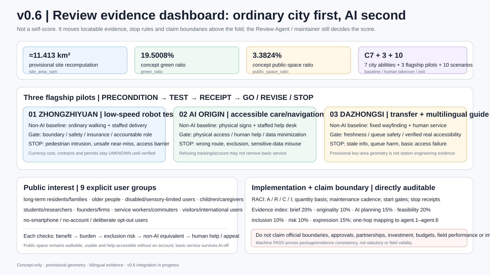
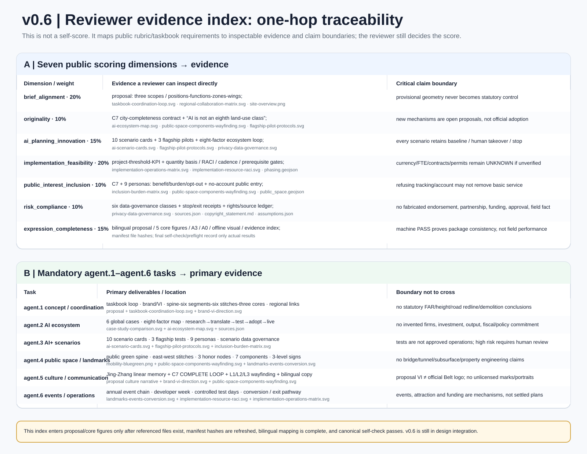

v0.6 Above-Fold Review Evidence

Overview Map
* The provisional Dazhongsi key-area polygon has a known absolute-location precision risk; this figure shows task roles only.
Three-Level Scope
43.6 km² coordinated research
Industry, talent, universities, firms and future-city mechanisms; the research scope is not treated as a statutory control line.
11.4 km² overall design
The Jing-Zhang heritage park and mature urban fabric form the shared base for C7 gap-filling and renewal.
368.4 ha key detailed design
Zhongzhiyuan 192.1 ha, AI Origin 104.3 ha, Dazhongsi 72.0 ha; current polygons remain provisional.
C7 City Completeness
Long-term housing and family life
Schools, childcare and lifelong learning
Care, health and human public service
Walking, cycling, accessibility and transit
Green space, shade, water and free stay
Research, pilots, offices and service jobs
Culture, food, commons and public ground floors
Key Areas
Zhongzhiyuan · Complete Innovation Campus
R&D, pilot production and incubation are paired with daily services, green space, public exchange and controlled testing.
AI Origin · Complete Long-Term Neighborhood
Housing, education, care, shared work, ordinary retail, green space and civic commons are co-equal. Shuangfen Fortress Community is only a place-name easter egg.
Dazhongsi · Complete Station-City District
Ordinary retail, public culture, human services and interchange come before technology spectacle.
Land-Use Structure
Thirteen conceptual LAND_USE features combine housing, community services, education, research, culture, commerce and the public green spine into six stitched bands. The codes are design notation, not approved zoning.
long-term neighborhoods
care and public service
R&D and shared learning
Jing-Zhang civic green spine
Mobility and Walking
One north-south civic green spine and six east-west stitching links form a walking, cycling and accessibility-first concept network. Road centerlines are connection intentions, not engineering alignments or road redlines.
Blue-Green Public Space
Public space first supplies static wayfinding, human entry points, shade, green space and no-account access. Optional AI services are layered on top. Six civic commons are everyday public-life spaces, not photo-op installations.
Buildings
Thirteen BUILDING features are capacity/adjacency prototypes for testing relationships among housing, community services, research, commerce and public ground floors. They are not surveyed existing buildings and do not claim statutory height, FAR or building-by-building demolition decisions.
Renewal Projects
Near term · gap audit
Resident walk-throughs, accessibility gaps, shared spaces, public wayfinding and reversible pilots.
Middle term · key-area stitching
Advance public space, community services and convertible space only after statutory conditions are verified.
Long term · networked operations
Move effective pilots into long-term public service and developer-community operations; ineffective scenarios can exit.
AI Scenarios
Keep ordinary walking and human delivery.
Keep public catalogues and human booking.
People retain IP and investment judgment.
Physical accessibility must exist first.
Opt-out never removes basic service.
Keep offline timetables and staffed access.
Keep physical signs and human interpretation.
Never substitute for a real accessible route.
Keep ordinary payment and human purchase.
AI flags; people verify and decide.
Core Metrics
Task Coverage
| Task | Main evidence |
|---|---|
| Overall concept and coordination | C7 + spine/six bands/six stitches/three cores + three positions/five functions/three areas-two wings |
| AI innovation ecosystem | Six global mechanism cases + eight-factor ecosystem + three flagship test protocols |
| Scenarios and people | Ten AI scenarios + nine personas + benefit/burden/exit matrix |
| Public realm and business | Six civic commons + three public nodes + seven components + three-level wayfinding |
| Implementation and operations | RACI + quantity basis + maintenance cadence + prerequisite gates + GO/REVISE/STOP receipts |
| Review traceability | Seven public rubric dimensions + agent.1–agent.6 reviewer evidence index |
Self-Check Status
Sources
- Project brief, taskbook, allowed design space and planning limits
- Repository provisional boundaries for concept generation and self-check only
- Official public material from Vector Institute, Mila, Alan Turing Institute, AI Singapore, Seoul AI Hub and Punggol Digital District
- Machine-readable references are registered in `sources.json`
Assumptions
Offline static page. No remote scripts, maps, fonts, iframes, forms or media.
v0.5 taskbook enhancement evidence
Taskbook coordination loop

Global AI case comparison

Full-factor AI ecosystem

Ten AI scenario cards

Regional collaboration

Implementation & operations

Privacy & data governance

Brand / VI direction

Components & wayfinding

Landmarks, events & conversion

v0.6 new professional evidence
Flagship pilot protocols

Inclusion & burden matrix

Implementation resource & RACI

Reviewer evidence index
